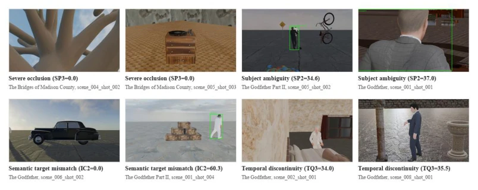
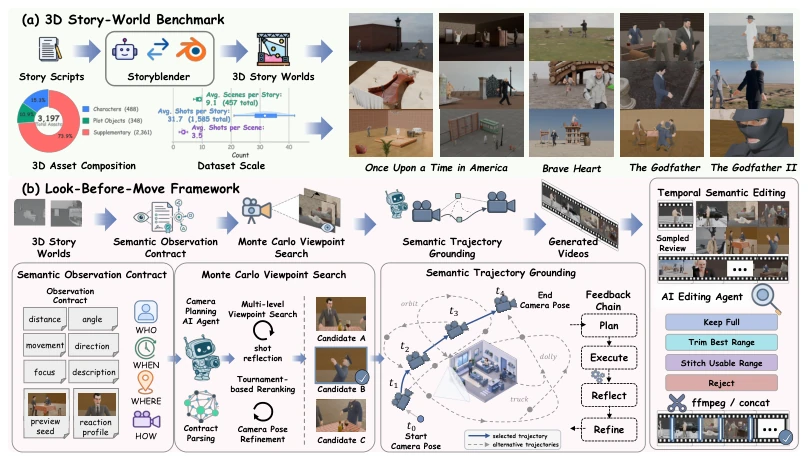
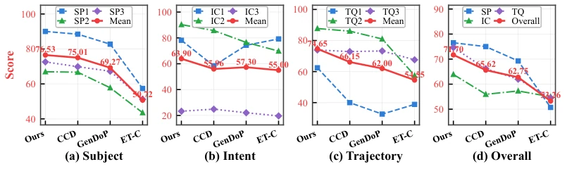
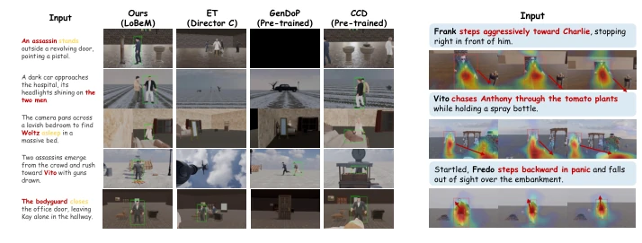
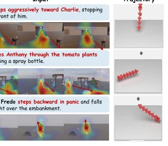
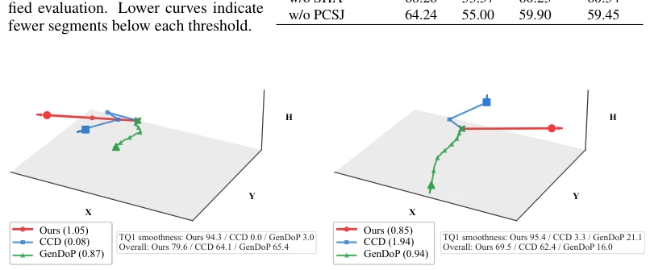
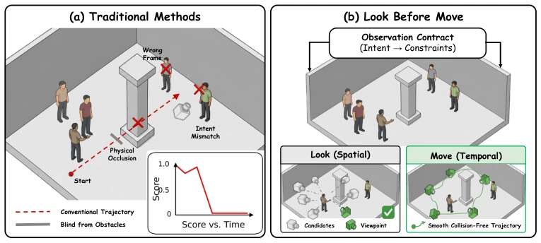
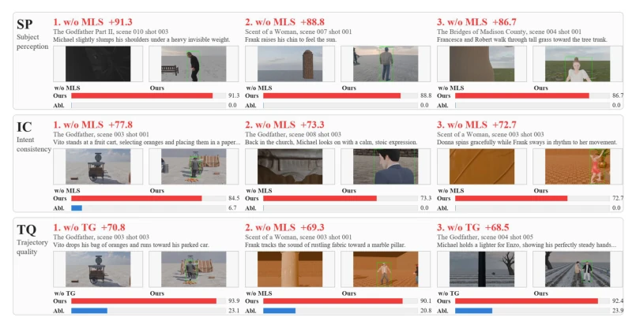
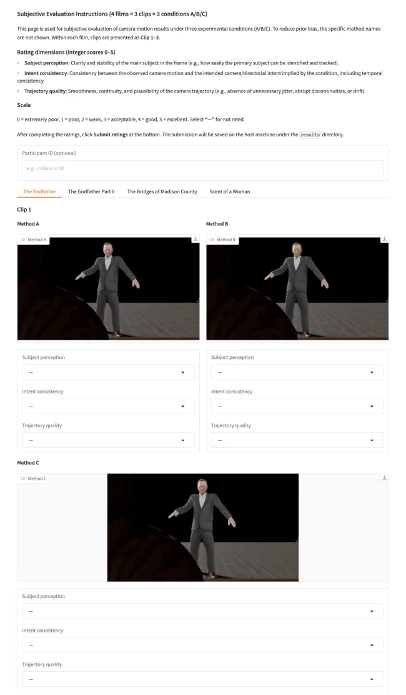
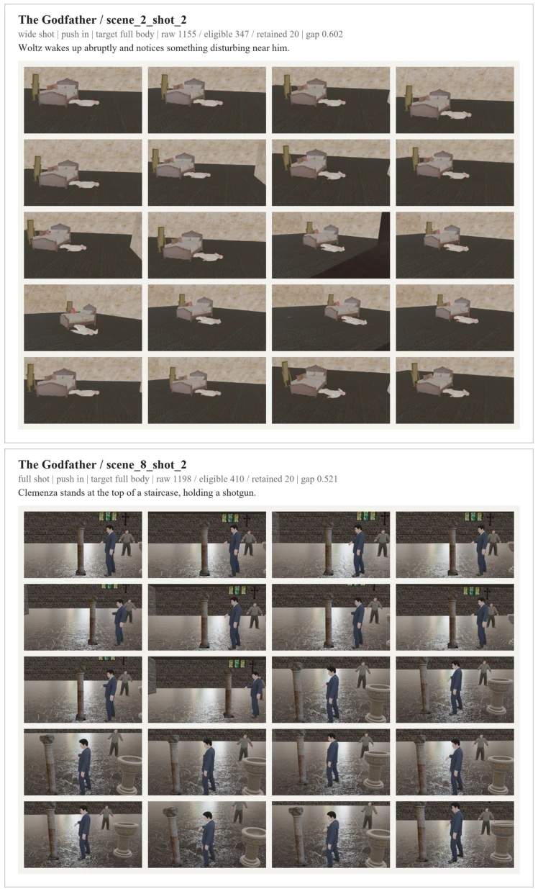

这论文标题起得挺像老司机，"先看后走"，但核心痛点抓得准。现在的相机控制大多只顾着平滑轨迹，像开自动挡的，却忘了司机得知道看哪。作者把"观察意图"和"运动执行"拆开，搞了个叙事驱动的视觉注意力框架。优点是把语义意图转成了可执行的视觉约束，避免了"为了动而动"。缺点嘛，依赖 StoryBlender 这种特定引擎，泛化性存疑，而且蒙特卡洛搜索在复杂场景下会不会慢成狗？不过实验数据确实漂亮，比那些纯生成轨迹的基线强，至少没把主角拍成背景板。算是给具身智能的"眼睛"加了个脑子，但别指望它能立刻去拍好莱坞大片，毕竟还在 3D 故事世界里打转。
This paper's title sounds quite like a seasoned driver, "Look before Move", but it accurately grasps the core pain point. Current camera control mostly focuses only on smooth trajectories, like driving an automatic transmission, yet forgets that the driver needs to know where to look. The authors decouple "observation intent" and "motion execution", devising a narrative-driven visual attention framework. The advantage lies in converting semantic intent into executable visual constraints, avoiding "moving for the sake of moving". The downside is reliance on specific engines like StoryBlender, raising doubts about generalizability, and whether Monte Carlo search will become extremely slow in complex scenes? However, the experimental data is indeed impressive, outperforming baselines that purely generate trajectories, at least not rendering the protagonist as a background element. It counts as adding a brain to the "eyes" of embodied intelligence, but do not expect it to immediately shoot Hollywood blockbusters, after all, it is still revolving within the 3D story world.
研究动机Motivation
具身智能在动态 3D 环境里，视觉感知不能只是被动接收，得主动决定看什么。现有工作大多假设观察目标已定，或者只关注生成平滑轨迹。比如 GenDoP [13] 和 ET [15] 虽然能生成轨迹，但缺乏从叙事意图到物理可行性的语义映射。CCD [38] 等扩散模型偏向像素空间，缺乏可执行 3D 世界的物理 grounding。这导致相机可能避开障碍物，却拍不到关键动作。作者指出，相机不仅是传感器，更是叙事观察者，需要解决"看什么"、"怎么看"、"何时切换"的问题。现有方法没解决叙事意图如何转化为物理约束，导致生成的镜头可能符合几何但违背故事逻辑。因此，需要一种能先规划观察证据再规划运动的框架。
In dynamic 3D environments, embodied intelligence's visual perception cannot be merely passive reception; it must actively decide what to look at. Existing work mostly assumes observation targets are fixed, or only focuses on generating smooth trajectories. For example, GenDoP [13] and ET [15] can generate trajectories, but lack semantic mapping from narrative intent to physical feasibility. Diffusion models like CCD [38] lean towards pixel space, lacking physical grounding in executable 3D worlds. This leads to cameras potentially avoiding obstacles but failing to capture key actions. The authors point out that cameras are not only sensors but also narrative observers, needing to solve the problems of "what to look at", "how to look", and "when to switch". Existing methods do not solve how narrative intent is converted into physical constraints, leading to generated shots that may conform to geometry but violate story logic. Therefore, a framework is needed that plans observation evidence first and then plans motion.

Figure 11: Representative failure cases. Severe occlusion, subject ambiguity, semantic target mismatch, and temporal discontinuity correspond to drops in SP3, SP2, IC2, and TQ3, respectively.
The overall framework is called Look-Before-Move, the core is decoupling observation and motion. First, a Benchmark based on StoryBlender [9] is constructed, providing executable 3D scenes. The Look phase is responsible for spatial perspective: first rendering multi-views through a Perception Agent, parsing director intent into a "Semantic Observation Contract", clarifying constraints such as target subjects, spatial relationships, etc. Then use Monte Carlo Viewpoint Search to generate candidate viewpoints, filter through Tournament-based Reranking, finally use reflection mechanism to fine-tune posture, ensuring no occlusion and conforming to composition. The Move phase is responsible for temporal motion: connecting discrete keyframes into smooth trajectories (Semantic Trajectory Grounding), verifying physical feasibility and narrative consistency through trajectory reflection, finally performing temporal semantic editing, splicing into a coherent sequence. The entire process achieves a closed loop from abstract intent to executable camera behavior through multi-Agent collaboration.

Figure 1: Overview of the benchmark construction and Look-Before-Move framework. (a) We build a dynamic 3D story-world benchmark using StoryBlender, covering narrative scripts, controllable scenes, character animations, camera annotations, and dataset statistics. (b) Look-Before-Move converts narrative intent into an observation contract, searches and refines feasible viewpoints in the executable 3D world, and grounds selected views into temporally coherent camera trajectories.
The dataset is based on StoryBlender [9], containing 50 stories, 457 scenes, 1585 shots. Baselines include CCD [38], GenDoP [13], ET [15]. Evaluation is divided into three dimensions: Subject Perception (SP), Intent Consistency (IC), Trajectory Quality (TQ). Results show Look-Before-Move leads CCD by about 6 points in overall score, especially with significant improvement in Intent Consistency. Ablation studies show Monte Carlo Search (MLS) and Trajectory Grounding (TG) are key components, scores drop significantly after removal. Qualitative results also show this method can better capture action clues and narrative focus, avoiding subject drift. However, user study sample size is limited, and relies on Blender rendering, real physical simulation verification needs strengthening.

Figure 2: Fine-grained quantitative comparison across subject perception, intent consistency, tra- jectory quality, and overall performance. Look-Before-Move improves the segment-weighted score while maintaining stronger motion-related metrics than the compared camera planning baselines. The panel exposes where each method succeeds or fails beyond the single aggregate score.

Figure 3: Qualitative comparison on representative story segments. Rows pair narrative instructions with outputs from our method and baselines, testing subject identity, action cues, spatial context, and story-relevant framing.
其他图片Other Figures

Figure 4: Qualitative visualization of world visual attention. Attention maps and trajectories show narrative intent grounded in evidence before execution.

Figure 6: Additional comparison of semantic trajectory quality. Look-Before-Move achieves stronger semantic alignment without sacrificing executable motion quality.

Figure 8: Motivation and task contrast for narrative-grounded world visual attention. The task requires the agent to convert high-level directorial intent into observable subjects, semantic regions, feasible viewpoints, and executable camera motion in a dynamic 3D story world.

Figure 10: Counterfactual ablation visualization. The metric panels show how each component affects SP, IC, and TQ sub-metrics under controlled component removals.

Figure 12: User study interface

Figure 13: Monte Carlo viewpoint-search candidate boards. Each board reports retained candidate views after sampling, geometric and semantic validation, deduplication, and reranking.